En este laboratorio trabajamos con la modalidad «Local + Privado»: un modelo abierto, qwen2.5-coder:3b, corre en nuestra propia computadora con Ollama y lo usamos para revisar, probar y corregir un archivo pequeño de Python (calculadora.py) sin mandar el código a ningún servicio de IA en la nube. El equipo es un Ryzen 7 5800H con 15.4 GB de RAM y gráficos integrados de AMD, así que el modelo corre en CPU y la velocidad se nota desde la primera consulta.
Todas las interacciones con el modelo de este informe se hicieron de verdad, una a la vez, y cada una quedó guardada en la carpeta evidencia con el prompt exacto, la respuesta completa, la hora y el tiempo. Las capturas son esos mismos archivos dibujados como terminal; no se retocó ninguna respuesta del modelo. Donde el modelo se equivocó lo dejamos escrito y explicamos qué hicimos con su sugerencia.
La consulta con el Wi-Fi apagado (pasos 16 y 17) la hicimos con un script que deja registro de que no había conexión. Al final respondemos las siete preguntas de reflexión y comparamos el modelo local con una herramienta en la nube.
Antes de tocar nada revisamos memoria y disco con PowerShell. El equipo tiene 15.4 GB de RAM (8.1 GB libres en ese momento) y 443.9 GB libres en el disco C:, de sobra para un modelo de 1.9 GB. Con eso no hizo falta bajar al modelo de 1.5B: nos quedamos con el de 3B que recomienda el enunciado.
Ollama 0.40.13 lo instalamos con winget el 29/10/2026, antes de empezar a documentar; por eso no hay capturas del instalador y no inventamos ninguna. El programa quedó en C:\Users\HOME\AppData\Local\Programs\Ollama\ollama.exe y esa terminal no lo tenía en el PATH, así que en todo el laboratorio lo llamamos con la ruta completa.
| Elemento | Valor |
|---|---|
| Procesador | AMD Ryzen 7 5800H with Radeon Graphics |
| Memoria RAM | 15.4 GB (8.1 GB libres al medir) |
| Disco C: | 443.9 GB libres |
| Ollama | 0.40.13, servidor en http://localhost:11434 |
| Modelo del laboratorio | qwen2.5-coder:3b, 3.1B parámetros, cuantización Q4_K_M, 1.9 GB |
| Python | 3.13.5 |
El paso 3 (ollama --version) devolvió la versión 0.40.13. El modelo ya estaba descargado cuando empezamos, por lo que tampoco hay captura del ollama pull; lo que sí mostramos es ollama list (paso 5) y ollama show. El nombre exacto que usamos en todo el laboratorio es qwen2.5-coder:3b. La lista trae otros tres modelos (qwen2.5:3b, nomic-embed-text y qwen3:4b) que son de otros laboratorios; en este no se usaron.
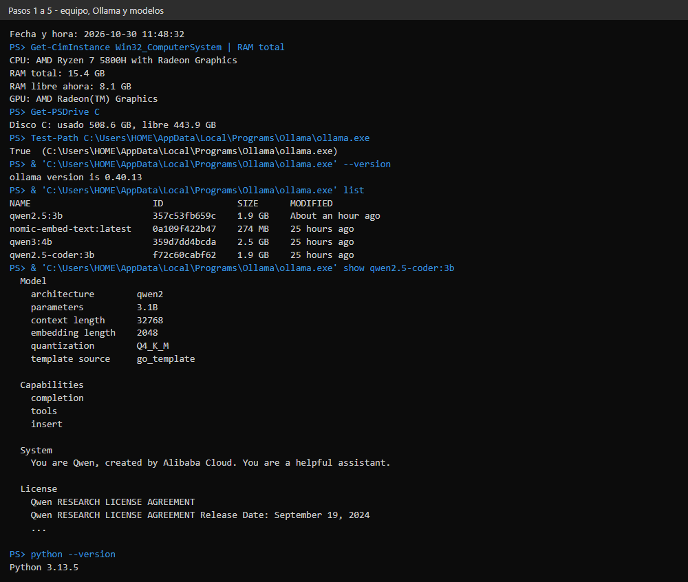
Para la primera consulta usamos la pregunta del enunciado: una función que determine si un número es primo, con tres ejemplos. Como ollama run sin argumentos abre una sesión interactiva, enviamos el prompt por entrada estándar y guardamos la respuesta completa. La consulta tardó 34.5 s; fue la primera y es la más lenta de la serie, seguramente porque el modelo tuvo que cargarse en memoria; no lo medimos por separado.
La función que devolvió es correcta (verifica hasta la raíz cuadrada avanzando de 6 en 6) y los resultados de sus ejemplos coinciden con lo esperado. Pero le pedimos tres ejemplos y escribió cuatro (17, 20, 29 y 1). Es un detalle menor, y fue lo primero que nos mostró que un modelo de 3B sigue las instrucciones de forma aproximada.
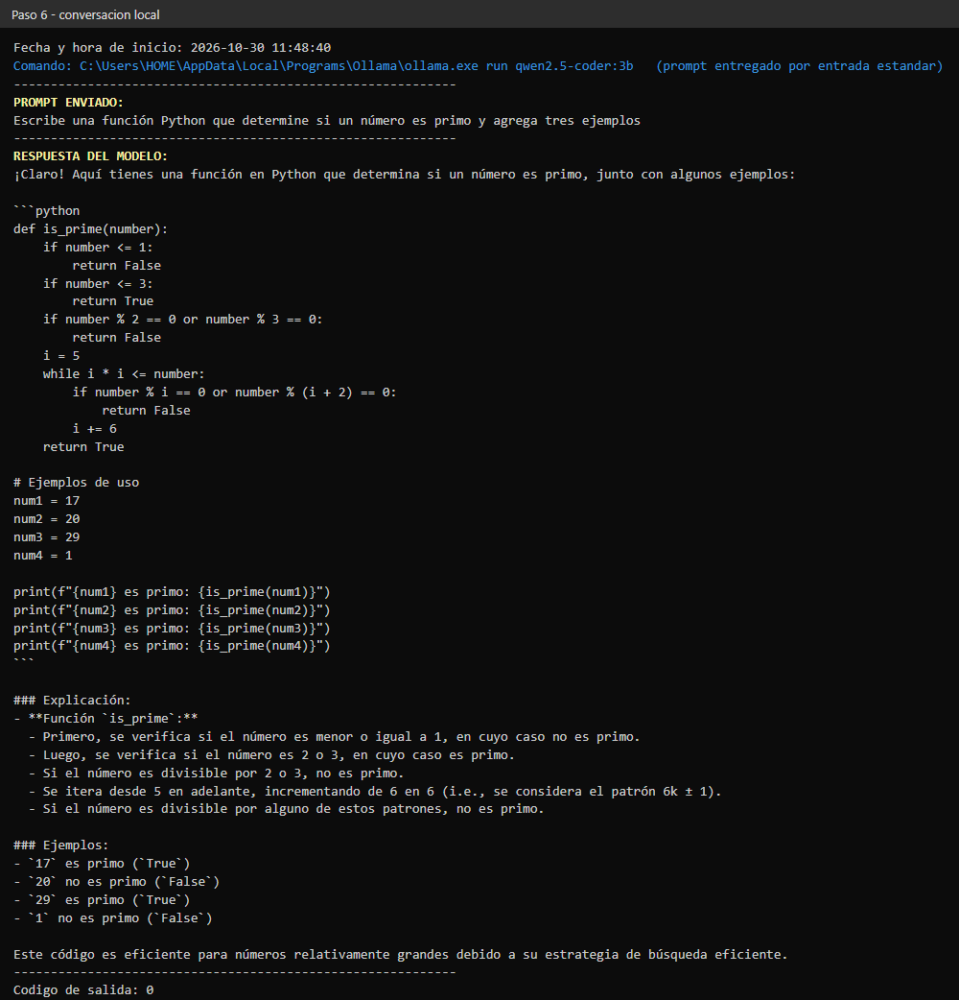
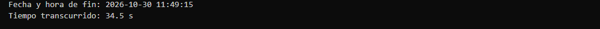
Creamos la carpeta laboratorio_local_privado y dentro el archivo calculadora.py con el código del enunciado. Guardamos además una copia sin tocar, calculadora_original.py, para poder comparar el antes y el después.
def dividir(a, b):
return a / b
def promedio(valores):
return sum(valores) / len(valores)
def porcentaje(valor, total):
return (valor / total) * 100
En el paso 9 copiamos nosotros el contenido del archivo y lo pegamos en el prompt del paso 10; esa es la diferencia con un asistente web o de editor, que leería el repositorio por su cuenta. Usamos el prompt del enunciado tal cual, con el código al final:
Actúa como revisor de código Python. Analiza el siguiente código y detecta casos límite o errores. No cambies los nombres de las funciones. Devuélveme primero una lista de problemas y luego una versión corregida. [contenido de calculadora.py]
El modelo respondió en 23.4 s. Detectó los tres problemas que buscábamos: dividir con b igual a cero, promedio de una lista vacía y porcentaje con total cero. Hasta ahí bien. El problema está en la versión corregida que propone: en vez de lanzar excepciones, devuelve cadenas como "Error: División por cero". No reemplazamos el archivo, como pedía el enunciado.
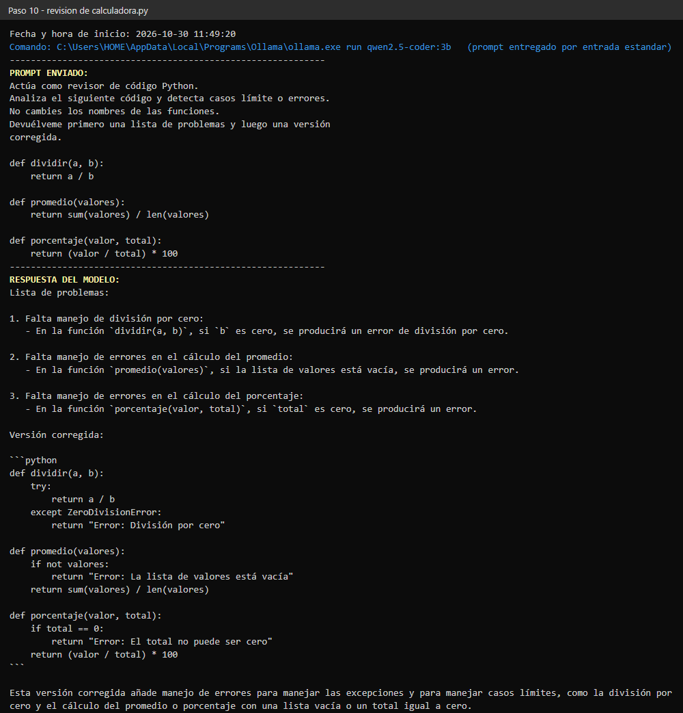
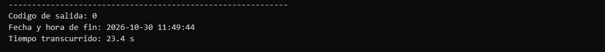
Antes de aceptar nada ejecutamos los tres casos sobre el código original. Los tres fallan con ZeroDivisionError: division by zero, tal como dijo el modelo; los casos normales (dividir(10, 4) da 2.5, promedio([2, 4, 6]) da 4.0 y porcentaje(25, 200) da 12.5) funcionan. Después probamos la versión del modelo en un archivo aparte: dividir(10, 0) devuelve el texto de error y al sumarle 1 aparece TypeError; round(promedio([]), 2) también falla con TypeError. Es decir, cambiaba un error claro por otro más confuso y más lejos del origen, además de que cualquier código que reciba esa cadena podría tratarla como un resultado válido.
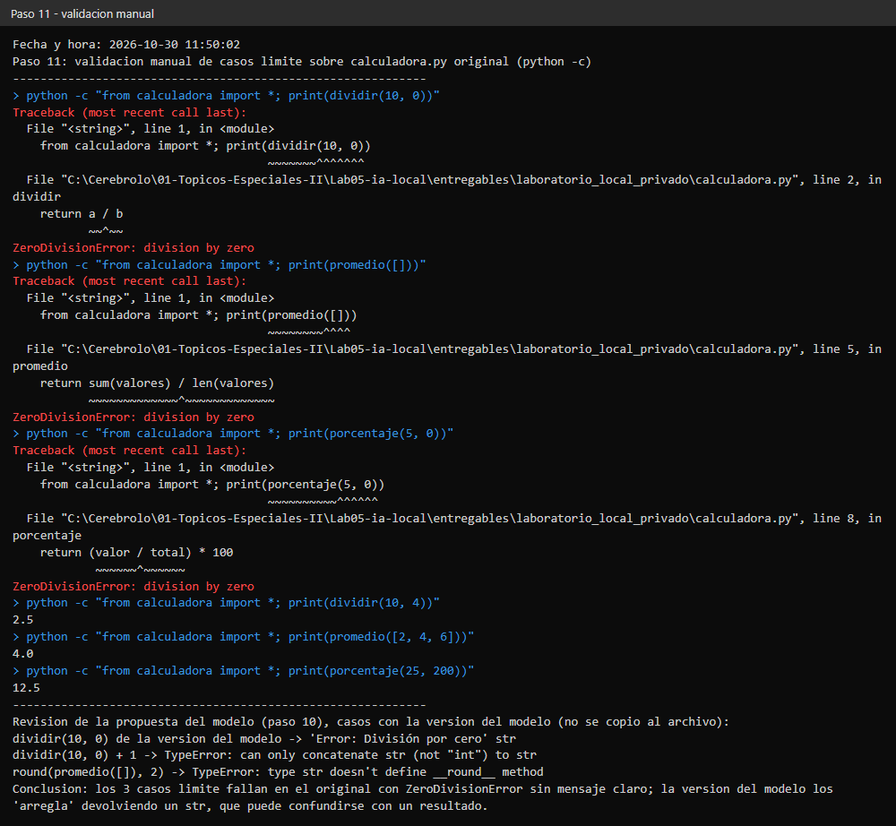
Para el paso 12 le pasamos al modelo solo los nombres y parámetros de las tres funciones, sin el código, y le pedimos tres pruebas normales y tres de casos límite con unittest. En el prompt le indicamos que en los casos límite debía lanzarse ValueError (con assertRaises), porque es lo que pediremos en la corrección del paso 14; la decisión de usar ValueError fue nuestra, no del modelo.
Devolvió ocho pruebas en 21.2 s y copiamos solo las que entendíamos y tenían sentido. Hay un resumen de lo aceptado y lo rechazado más abajo; aquí lo importante es que la prueba test_promedio_vacia esperaba que promedio([]) devolviera 0, lo contrario de lo que pedimos. Un promedio de 0 para una lista sin datos es un valor falso, así que la corregimos a mano para que espere ValueError. No debilitamos ninguna prueba para que pasara: la prueba exige la excepción y la corrección va en la implementación.
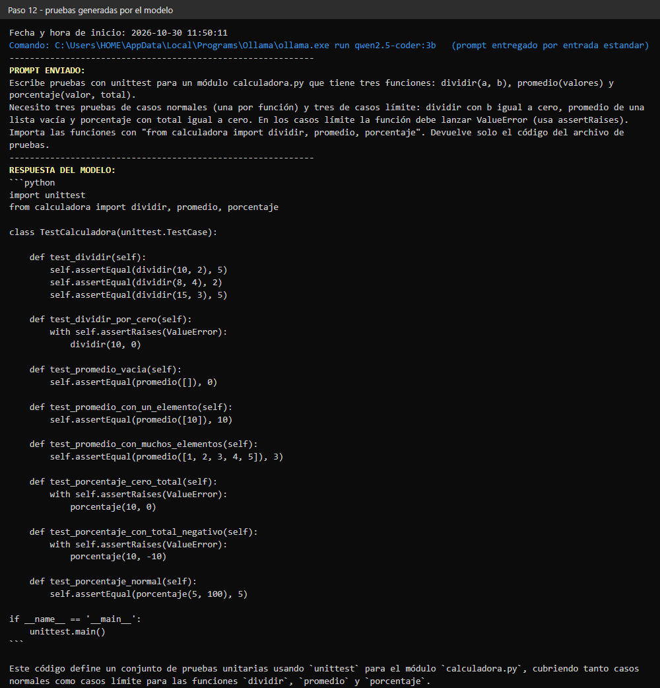
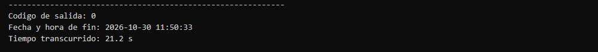
El archivo test_calculadora.py quedó con seis pruebas en esta etapa: test_dividir, test_promedio_con_muchos_elementos y test_porcentaje_normal para los casos normales; test_dividir_por_cero, test_promedio_lista_vacia y test_porcentaje_cero_total para los límites.
Corrimos python -m unittest test_calculadora.py con el calculadora.py original. Pasaron las tres pruebas normales y fallaron las tres de casos límite, las tres con ZeroDivisionError (que no es un ValueError, por eso unittest las cuenta como errores y no como fallos). Seis pruebas, FAILED (errors=3). Esta salida es la línea base contra la que medimos el cambio.
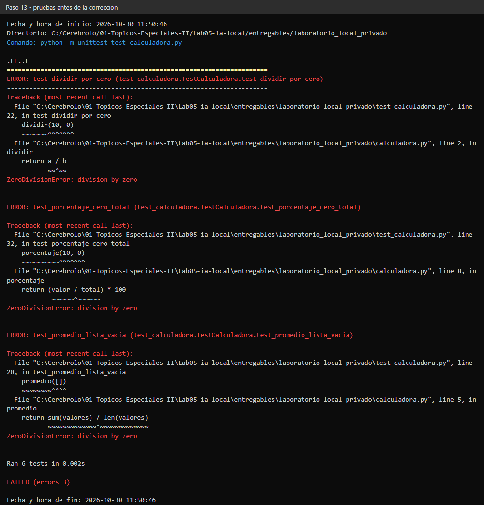
En el paso 14 le mandamos al modelo el código original y le pedimos corregir solo esos tres casos, mantener nombres y parámetros, lanzar ValueError con mensaje en español y no devolver textos. Esta vez respondió en 7.9 s y la propuesta era la correcta: tres condiciones de guarda al inicio de cada función. La revisamos línea por línea, no cambia ningún otro comportamiento y la copiamos a calculadora.py. Los dos archivos quedan en la carpeta del laboratorio.
Antes (calculadora_original.py):
def dividir(a, b):
return a / b
def promedio(valores):
return sum(valores) / len(valores)
def porcentaje(valor, total):
return (valor / total) * 100
Después (calculadora.py tras el paso 14):
def dividir(a, b):
if b == 0:
raise ValueError("El divisor no puede ser cero.")
return a / b
def promedio(valores):
if not valores:
raise ValueError("La lista de valores no puede estar vacía.")
return sum(valores) / len(valores)
def porcentaje(valor, total):
if total == 0:
raise ValueError("El total no puede ser cero.")
return (valor / total) * 100
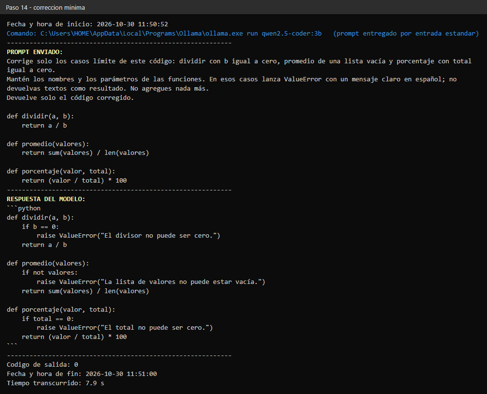
Con la corrección aplicada volvimos a correr las pruebas: las seis pasan (Ran 6 tests ... OK). Como ninguna falló, no tuvimos que pedirle al modelo que explicara un error en este paso; esa parte del enunciado (pegar el mensaje de error y pedir la causa antes de otra versión) la aplicamos más adelante, en el reto de la mediana, donde sí apareció una prueba fallida.
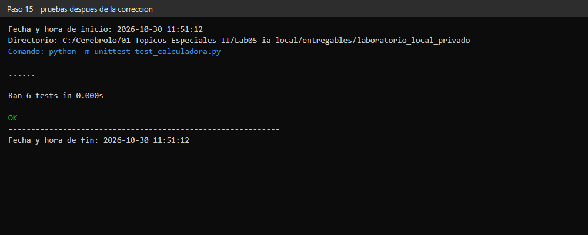
| Paso | Sugerencia | Decisión | Motivo |
|---|---|---|---|
| 10 | Detectar división, promedio vacío y porcentaje con total cero como problemas | Aceptada | Los tres se reprodujeron con ejecuciones reales. |
| 10 | Devolver cadenas «Error: …» en lugar de lanzar excepciones | Rechazada | Mezcla tipos de retorno; dividir(10, 0) + 1 y round(promedio([]), 2) dan TypeError, y un texto puede confundirse con un resultado. |
| 12 | Pruebas normales de dividir, promedio (lista de cinco) y porcentaje; pruebas de ValueError para dividir y porcentaje | Aceptadas | Cubren lo pedido y las entendemos. |
| 12 | promedio([]) igual a 0 | Rechazada y corregida a mano | Un promedio de 0 sin datos es un valor inventado; se exige ValueError. |
| 12 | Prueba de porcentaje con total negativo que espera ValueError | Rechazada | Fuera de los tres casos pedidos; un total negativo se puede dividir y habría que cambiar el comportamiento de la función. |
| 12 | Pruebas de promedio con un solo elemento | Descartada | Redundante con la de cinco elementos. |
| 14 | Tres guardas con ValueError y mensaje claro | Aceptada | Es la corrección mínima pedida; las seis pruebas pasan. |
| 23 | Función mediana y pruebas de cantidad impar, par y lista vacía | Aceptadas | La función es correcta; las pruebas pasan salvo un valor esperado. |
| 23 | Valor esperado -3 para la mediana de [-1, -3, -5, -7] | Rechazada y corregida a mano a -4 | La lista ordenada es [-7, -5, -3, -1] y (-5 + -3) / 2 es -4. |
| 23 | «Instalar la biblioteca unittest» | Ignorada | unittest viene con Python; no hay nada que instalar. |
Esta comprobación necesita que el equipo esté realmente desconectado, así que no bastaba con decir que lo estaba. Preparamos el script paso16_offline.ps1, que registra la fecha y la hora, intenta conectarse a 8.8.8.8 por el puerto 53 y resolver ollama.com (ambas deben fallar), muestra el estado de los adaptadores con Get-NetAdapter, consulta a qwen2.5-coder:3b con la ruta completa de ollama.exe sobre calculadora.py y guarda todo en evidencia\16_offline.txt. Para el paso 17 el modelo es el mismo, sin variantes con «cloud» en el nombre, y no se abre ningún servicio web.
Antes de apagar el Wi-Fi probamos el script con la red encendida, solo para confirmar que no tiene errores y que la parte del modelo funciona. Funcionó: el script marcó «ATENCION: hay conexion a Internet» (8.8.8.8 respondió y ollama.com resolvió), el adaptador Wi-Fi aparecía como Up y el modelo contestó en 9.1 s. Esa ejecución es una prueba del script y no demuestra nada sobre el uso sin conexión.
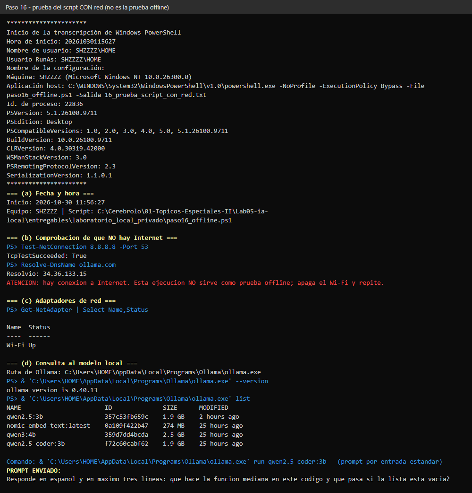
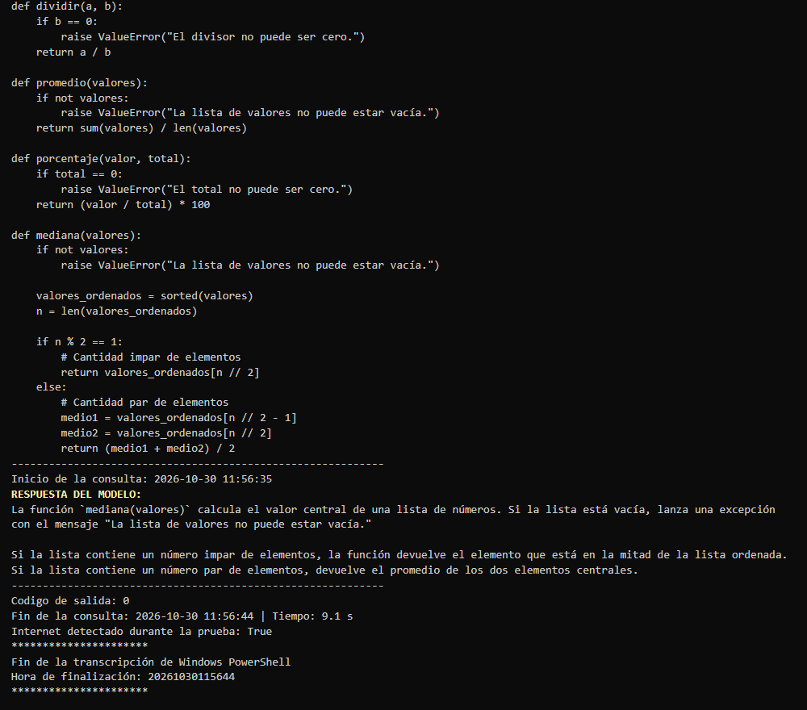
Corrimos el script el 30/10/2026 a las 12:59 con el Wi-Fi apagado. La salida deja constancia de tres cosas: Test-NetConnection a 8.8.8.8 devolvió TcpTestSucceeded: False, Resolve-DnsName ollama.com falló con «No hay servidores DNS configurados para el sistema local» y Get-NetAdapter mostró el Wi-Fi como Disconnected. En esas condiciones ollama list siguió mostrando los modelos descargados y qwen2.5-coder:3b respondió en 8.1 s que mediana calcula la mediana de la lista y que, si la lista está vacía, lanza una excepción. La respuesta es correcta y coincide con el código. El tiempo fue casi el mismo que en la prueba con red (9.1 s), lo que tiene sentido: la red no interviene en la inferencia.
Para el paso 17 usamos el mismo modelo local, sin variantes con «cloud» en el nombre, y no abrimos ningún servicio web mientras duró la prueba. Toda la inferencia ocurrió en el equipo.
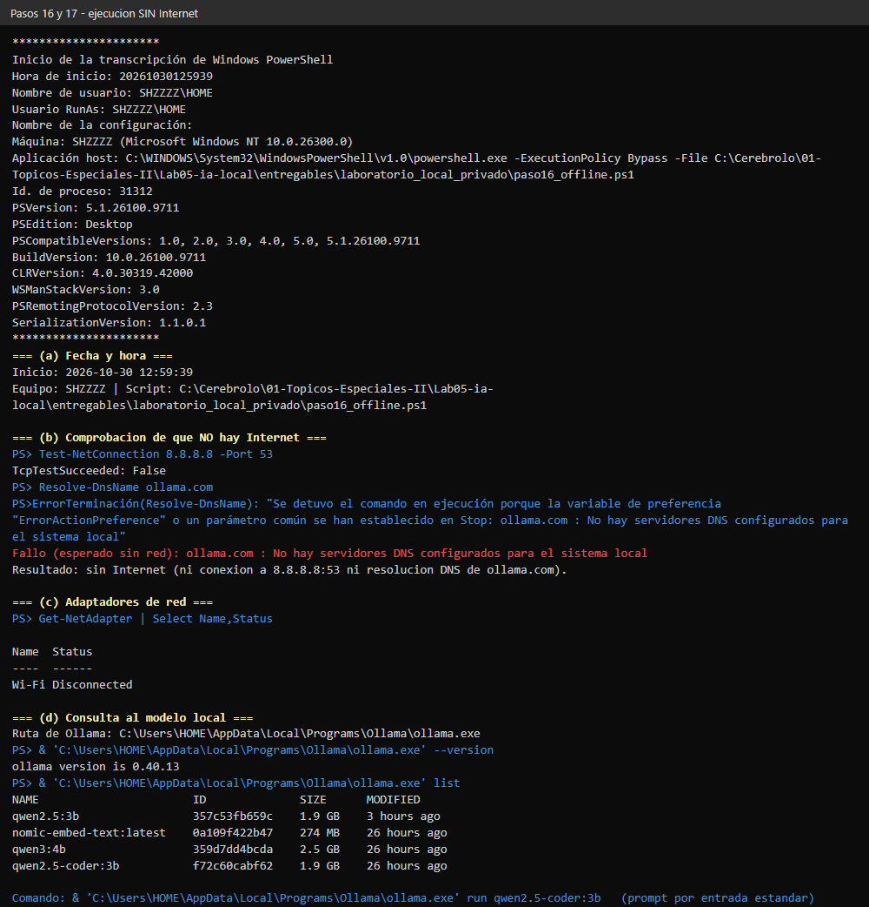
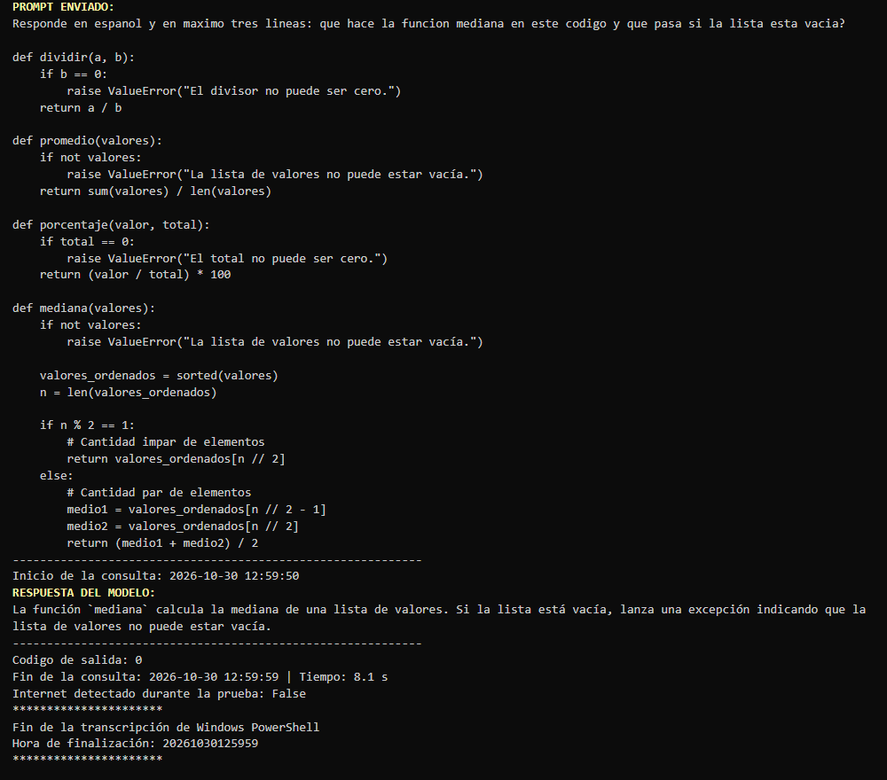
Ollama expone su API en http://localhost:11434/api y, para las solicitudes locales, no pide autenticación (Ollama, s. f.-a). Guardamos el ejemplo del enunciado como consultar_modelo_basico.py: usa solo json y urllib.request de la biblioteca estándar y envía un POST a /api/generate con "stream": False. Lo ejecutamos (paso 19) y a los 30.6 s devolvió una prueba unittest para dividir. No usamos clave de API en ningún momento. Un detalle de la respuesta: dice que unittest busca funciones «que terminan en test_», cuando en realidad es que empiezan por ese prefijo.
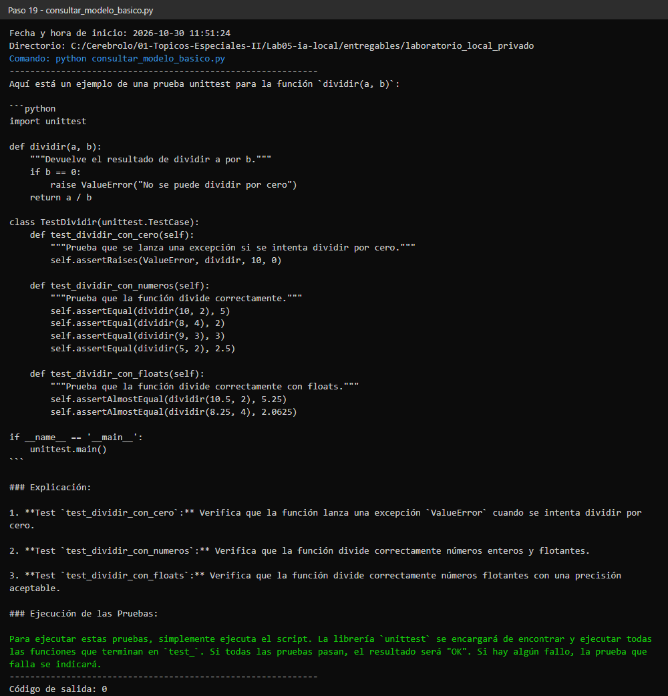
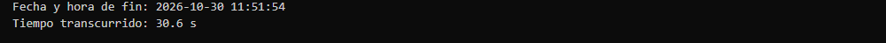
Para el paso 20 cambiamos consultar_modelo.py: lee calculadora.py con pathlib, arma un prompt de revisión y, antes de enviarlo, imprime los primeros 100 caracteres con print(repr(prompt[:100])). El resto del código es el del enunciado. Al ejecutarlo se vio que el prompt empezaba con «Actúa como revisor de código Python. Revisa el siguiente código y dime en pocas líneas si todavía le» y que la respuesta tardó 7.8 s. Esa respuesta fue corta, pero no del todo exacta: lista tres «divisiones por cero» cuando el segundo caso es una lista vacía.
codigo = Path(__file__).with_name("calculadora.py").read_text(encoding="utf-8")
prompt = ("Actúa como revisor de código Python. "
"Revisa el siguiente código y dime en pocas líneas si todavía le falta "
"algún caso límite. No lo reescribas completo.\n\n" + codigo)
print("Primeros 100 caracteres del prompt:")
print(repr(prompt[:100]))
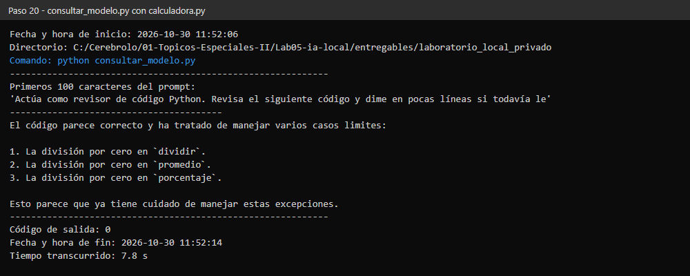
Creamos privado_demo.py con datos ficticios: nombre_cliente = "CLIENTE_DEMO_001" y un saldo de 1500.00. Primero pensamos agregar también un número de cuenta de mentira, pero lo quitamos: el enunciado prohíbe cuentas, y aunque fuera falso no aportaba nada a la prueba. Le pedimos al modelo local que explicara el código y respondió en 6.1 s describiendo correctamente la función resumen_cliente y la comparación del saldo.
La idea del paso es que nosotros decidimos qué sale de la computadora: el prompt se arma a mano y, con el paso anterior, hasta lo vemos antes de enviarlo. Aun así, el nombre aparece dentro del prompt que se procesa en el equipo, por lo que seguimos evitando datos reales; con un modelo local el riesgo baja, pero no desaparece.
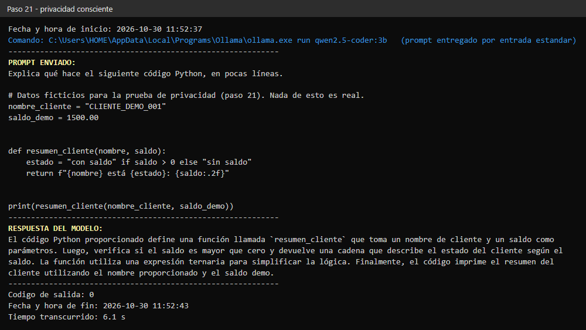
Medimos con la API local (medir_tiempos.py) una solicitud corta y otra con el contenido de calculadora.py, dos rondas cada una y con el modelo ya cargado. Ollama devuelve el número de tokens, así que además de los segundos calculamos la velocidad de generación. Los tiempos son de nuestro equipo, que no estaba dedicado solo a esta prueba, y pueden variar.
| Solicitud | Tokens del prompt | Tokens de respuesta | Tiempo total | Velocidad |
|---|---|---|---|---|
| Corta, ronda 1 | 42 | 25 | 3.6 s | 18.3 tokens/s |
| Corta, ronda 2 | 42 | 25 | 3.5 s | 17.9 tokens/s |
| Con calculadora.py, ronda 1 | 168 | 530 | 35.1 s | 16.7 tokens/s |
| Con calculadora.py, ronda 2 | 168 | 576 | 38.9 s | 16.2 tokens/s |
La solicitud corta tarda unos 3.5 s; la del archivo, entre 35 y 39 s, diez veces más. La velocidad por token casi no cambia (16 a 18 tokens por segundo): lo que alarga la espera es que el modelo escribe una respuesta mucho más larga. En la evidencia de esta medición solo se muestran los primeros 600 caracteres de la respuesta de la primera ronda; los demás pasos sí guardan la respuesta completa.
En calidad vimos varias cosas. En la medición, el modelo respondió sobre el código ya corregido que era «correcto» y se fue por las ramas con sugerencias de docstrings y constantes, sin que se las pidiéramos. Se equivocó en el conteo de ejemplos (paso 6), propuso cadenas en lugar de excepciones (paso 10), esperó un promedio de 0 (paso 12), confundió dónde estaba la división por cero en promedio (paso 20) y se equivocó en las cuentas del paso 23. No vimos repeticiones de texto. El código que escribe suele ser razonable, pero sus explicaciones y sus valores esperados hay que revisarlos.
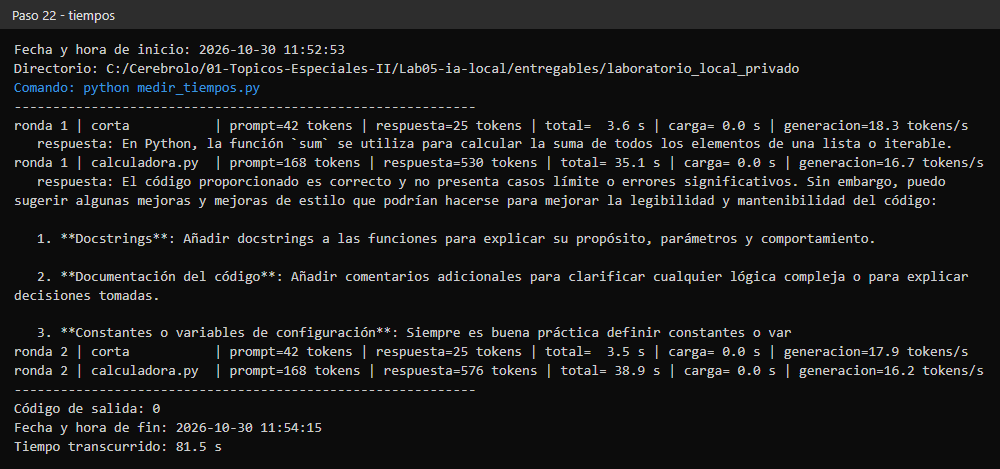
Le pedimos al modelo local agregar mediana(valores) a calculadora.py, con ValueError si la lista está vacía y sin modificar la lista recibida, además de pruebas (impar, par, desordenada y vacía) y una explicación. Tardó 51.6 s y no usamos ninguna IA en la nube. La función que propuso ordena una copia con sorted, devuelve el elemento central si la cantidad es impar y el promedio de los dos centrales si es par. La revisamos y es correcta; al usar sorted no altera la lista original, que era el otro requisito.
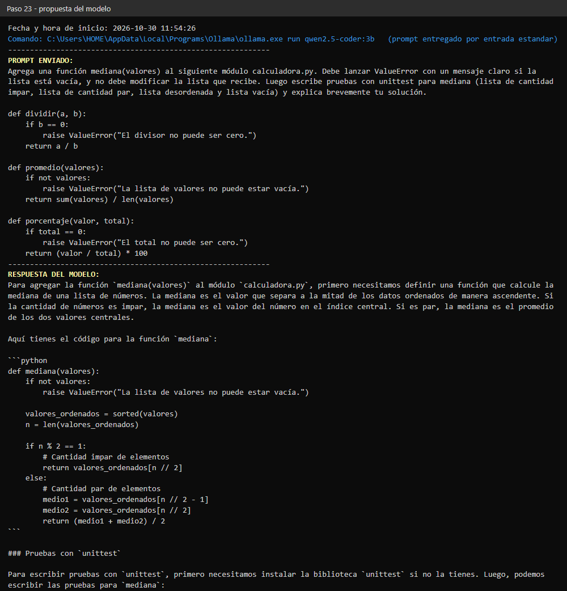
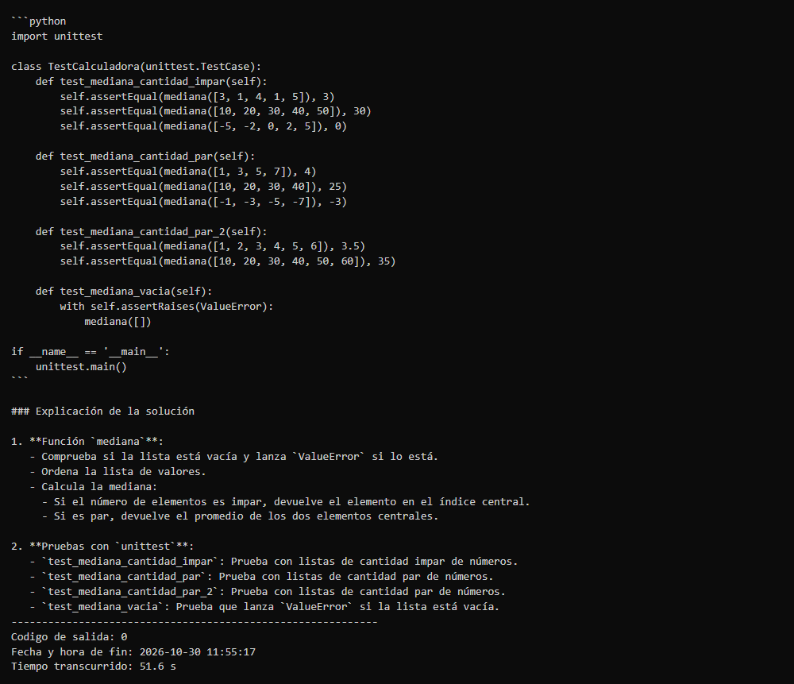
Copiamos la función a calculadora.py y las pruebas a test_calculadora.py, sin cambios, en una clase TestMediana. Salieron 10 pruebas y una falló: AssertionError: -4.0 != -3 en mediana([-1, -3, -5, -7]).
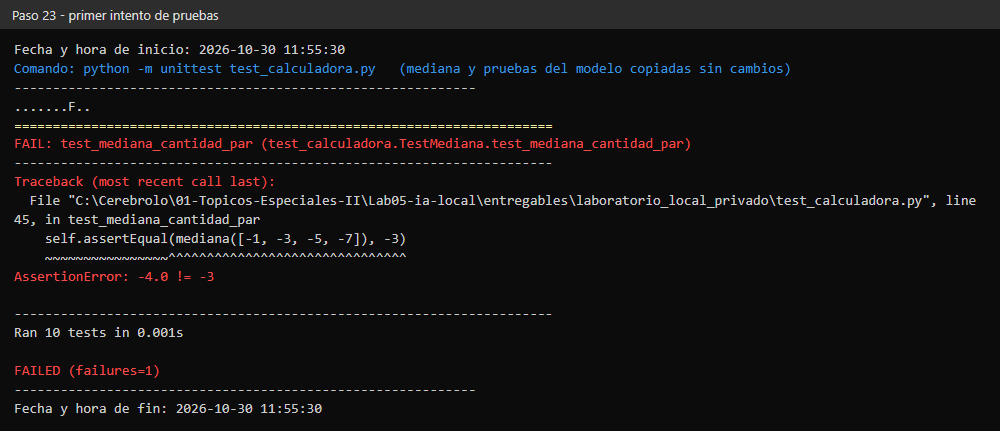
Siguiendo el paso 15 del enunciado, le pasamos al modelo solo el mensaje de error y le pedimos la causa antes de generar otra versión. Respondió en 13.4 s que el error estaba en la prueba y no en la función, lo cual es cierto, aunque al explicarlo hizo mal la cuenta: escribió «(3 + 5) / 2 = 4» y perdió el signo. Nosotros hicimos la cuenta aparte: ordenada, la lista es [-7, -5, -3, -1] y (-5 + -3) / 2 = -4, así que el valor esperado era -4. Corregimos la prueba, no la función, y agregamos una prueba que el modelo no escribió: que mediana no modifique la lista que recibe. Resultado final: 11 pruebas, todas OK.
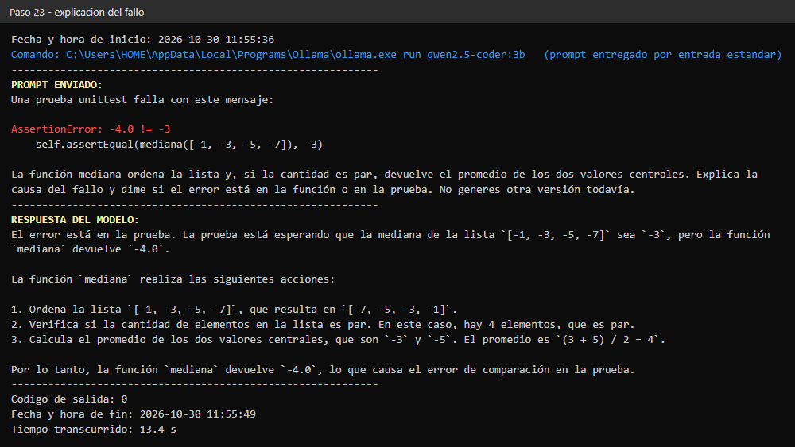
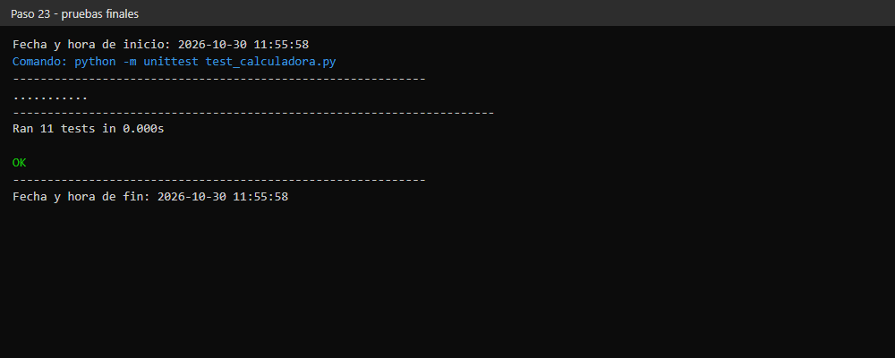
No medimos ninguna herramienta en la nube en este laboratorio, así que no tenemos tiempos propios de ella. Lo que sigue compara lo que medimos del modelo local con lo que cualquiera espera de un servicio en la nube; la columna de la nube es una impresión general, no una medición nuestra.
| Aspecto | Modelo local (lo medido) | IA en la nube (impresión general) |
|---|---|---|
| Velocidad | 3.5 s para una pregunta corta; 35 a 39 s para revisar un archivo corto de Python; 16 a 18 tokens por segundo en CPU; la primera consulta tarda más por la carga del modelo (34.5 s en el paso 6). | Suele responder más rápido porque corre en hardware especializado, pero depende de la conexión y del servicio. |
| Calidad | Detecta los casos límite evidentes y escribe código correcto para tareas pequeñas; falla en cuentas, conteos, valores esperados y a veces propone soluciones de peor diseño (cadenas de error). | Esperamos menos errores, sobre todo en explicaciones y en tareas largas; igual habría que verificar todo. |
| Privacidad | El código se procesa en el equipo y la API responde por localhost, sin clave; nosotros elegimos qué se pega en el prompt. | El contenido del prompt sale de la computadora hacia un tercero, con las políticas de ese servicio. |
| Costo y disponibilidad | Sin cuota ni clave; ocupa 1.9 GB de disco y bastante procesador mientras responde. | Normalmente por suscripción o por uso; requiere conexión. |
Para un archivo pequeño como este, el modelo local alcanzó: ayudó a ver los casos límite y a escribir pruebas y una función. Pero tuvimos que revisar cada respuesta y rechazar tres o cuatro sugerencias. La privacidad percibida es la ventaja clara; la velocidad es la desventaja que más se siente.
1. ¿Qué significa realmente que un modelo sea «local»?
Que los pesos del modelo están en el disco de nuestro equipo y que la inferencia, es decir, el cálculo que produce cada respuesta, la hace nuestro procesador. En este laboratorio fue el Ryzen 7 en CPU, y por eso tarda 35 segundos en revisar un archivo. No significa que el modelo sea nuestro ni que sea mejor: es un modelo publicado por otros (Qwen) que ejecutamos en casa. Tampoco todos los modelos de Ollama son locales: la documentación indica que también ofrece modelos en la nube, que corren sin GPU local (Ollama, s. f.-b), y por eso en el paso 17 el enunciado pide evitar los nombres con «cloud».
2. ¿Por qué descargar el modelo requiere Internet, pero usarlo después puede no requerirlo?
Porque descargar es traer 1.9 GB de pesos desde un registro remoto, y eso solo se puede hacer con conexión. Una vez que los archivos están en el disco, ejecutar el modelo es cálculo local y no necesita pedirle nada a nadie. El servidor de Ollama atiende en localhost, una dirección que no sale de la máquina (Ollama, s. f.-a). Lo comprobamos en el paso 16: con el Wi-Fi desconectado y sin DNS, el mismo modelo respondió en 8.1 s, casi lo mismo que con red (9.1 s).
3. ¿Qué ventaja ofrece localhost desde la perspectiva de integración de software?
Que el modelo se convierte en un servicio HTTP más. En el paso 19 consumimos http://localhost:11434/api/generate con solo json y urllib, sin instalar bibliotecas, sin clave de API y sin cuenta (Ollama, s. f.-a). Cualquier lenguaje que sepa hacer un POST puede usarlo, y el mismo código funciona en el equipo de cualquier compañero que tenga Ollama. Además no hay cuotas ni dependencia de que un tercero esté en línea.
4. ¿Qué limitación observó al utilizar un modelo pequeño en su propio equipo?
Dos que se sintieron mucho. La primera es la velocidad: 16 a 18 tokens por segundo, 35 a 39 s por una revisión de un archivo corto y 51.6 s para el reto de la mediana. La segunda, la precisión: contó mal los ejemplos del paso 6, devolvió cadenas en lugar de excepciones, esperó un promedio de 0 para una lista vacía, hizo mal una suma con negativos (en la prueba y en su propia explicación) y habló de «instalar unittest». Escribe código que casi siempre funciona, pero sus explicaciones y sus datos de prueba no se pueden aceptar sin comprobarlos.
5. ¿Ejecutar un modelo local elimina por sí solo todos los riesgos de privacidad? Explique.
No. Solo elimina el envío del contenido a un tercero; quedan otros riesgos. Los datos siguen en nuestra máquina, que puede tener malware o estar sin cifrar, y el historial de las sesiones y los archivos que pasamos al modelo quedan en el disco. Si el servidor se configura para atender en la red, otros equipos podrían usarlo; LM Studio, por ejemplo, permite servir los modelos en localhost o en toda la red (LM Studio, s. f.-a). Y si por descuido elegimos un modelo en la nube, el contenido sí sale. Por eso en el laboratorio usamos datos ficticios aunque todo fuera local, y por eso imprimimos los primeros 100 caracteres del prompt en el paso 20: la privacidad depende de qué decidimos entregar, no solo de dónde corre el modelo.
6. ¿En qué casos una organización podría preferir Local + Privado sobre un modelo cloud?
Cuando el código o los datos no pueden salir de la organización: un banco, una clínica o una entidad pública con datos de personas, o una empresa con código bajo acuerdo de confidencialidad. También cuando la conexión es mala o inexistente (una sede remota, por ejemplo), cuando se quiere un costo fijo y predecible en vez de pagar por uso, o cuando se necesita integrar el modelo en una herramienta interna por localhost. A cambio, la organización asume el hardware, el mantenimiento y una calidad que, con modelos pequeños, es menor.
7. ¿Cuál es la diferencia más evidente entre Ollama y LM Studio? ¿Y qué tienen en común?
En este laboratorio no usamos LM Studio; esta respuesta sale de su documentación oficial y de lo que hicimos con Ollama. La diferencia más visible es la interfaz. LM Studio es una aplicación con interfaz de chat, que enciende su servidor local desde la pestaña Developer con un interruptor «Start server» (LM Studio, s. f.-a, s. f.-b). Con Ollama trabajamos desde la terminal y la API: ollama run, ollama list y las peticiones a localhost:11434. LM Studio también tiene línea de comandos (lms), así que la diferencia es de enfoque y no de capacidad.
En común, ambas ejecutan modelos abiertos en el equipo del usuario y exponen una API local compatible con clientes de OpenAI: LM Studio sirve modelos con endpoints «OpenAI-like» (LM Studio, s. f.-b) y la documentación de Ollama habla de API para clientes compatibles con OpenAI y Anthropic (Ollama, s. f.-b). LM Studio indica que puede operar completamente sin conexión una vez descargados los modelos (LM Studio, s. f.-b); en Ollama esto lo verificaremos con el paso 16.
Cumplimos con evidencia real los 24 pasos: instalamos y comprobamos Ollama, hicimos las consultas al modelo local, validamos los casos límite, corregimos calculadora.py (de 3 errores en 6 pruebas a 6 pruebas OK), consumimos la API de localhost desde Python, hicimos la prueba de privacidad con datos ficticios y resolvimos el reto de la mediana (11 pruebas OK). El patrón Local + Privado funcionó para tareas pequeñas.
Lo que costó: la velocidad (35 a 39 s por una revisión corta) y la confianza en las respuestas. De unas diez sugerencias, rechazamos o corregimos varias, sobre todo las de devolver cadenas en lugar de excepciones, el promedio de 0 y el valor -3 de la mediana, y en la mediana el modelo falló en aritmética básica dos veces, en el valor esperado y en su explicación. Sin las pruebas y sin ejecutar el código, alguno de esos errores se habría quedado.
La consulta sin conexión de los pasos 16 y 17 también salió: con el Wi-Fi desconectado el modelo explicó la función mediana en 8.1 s, sin ninguna llamada fuera del equipo. No medimos una herramienta en la nube, de modo que esa columna de la comparación es solo una impresión, y no usamos LM Studio, por lo que su descripción viene de la documentación.
LM Studio. (s. f.-a). LM Studio as a local LLM API server. https://lmstudio.ai/docs/developer/core/server
LM Studio. (s. f.-b). Welcome to LM Studio Docs! https://lmstudio.ai/docs/app
Ollama. (s. f.-a). Introduction. https://docs.ollama.com/api/introduction
Ollama. (s. f.-b). Ollama documentation. https://docs.ollama.com/